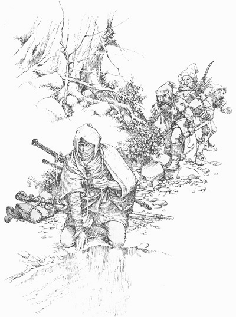

The Life and Death of Garet Jax
Introduction
Garet Jax, better known as the Weapons Master, is a common figure of legend across the Four Lands. His martial prowess is without equal. Earliest stories speak of him being the lone survivor when his regiment was slaughtered to a man. Later stories speak of a journey in which he protected and guided Jair Ohmsford to destroy the Illdatch where he finally met a mutual end with a legendary creature called a Jachyra. More information can be found at this listing of Wishsong of Shannara.
Residences
- Unknown
- Also Unknown but lower on the list
Quotes
"You shouldn't believe everything you hear. You're young. Not stupid."
|

Last Known Appearance
|